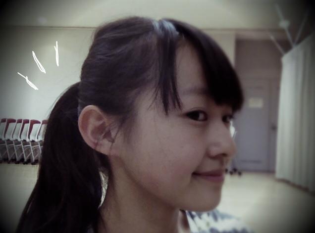
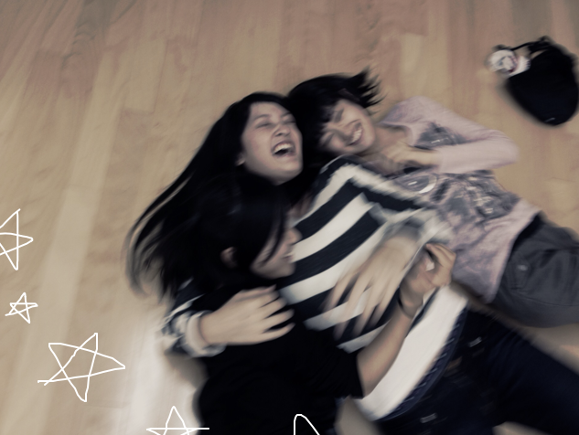
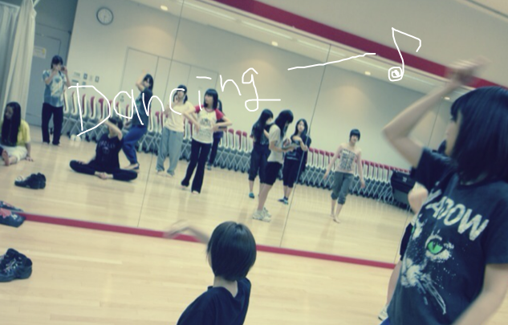

| 2011/11 16 Wed | 3回目*ベビたん |
やぁやぁ!!
読んでくださってる方、ありがとうございます。
コメントが少しずつ見れるようになりました!!
す---------------------んごいうれすぃ-----------です!!
ファンのみなさんからのメッセージが
こんなすぐに見ることができるなんて!
...BloGっていいですね**
BloGってステキです。うんうん
写真もほめていただいて......(おしゃれなんて...もう!うれしい←)
ほんとあったかいです。今ほかほかしてます。ほっかほか
1回目のBloGで私はガチの変顔が得意だ。とか言って
写メ期待してる方もたくさんいてるようですが.....
果たして載せていいのか!?って感じなのです。
みなさんともっと交流が深められてから
お見せしようかな...。
あっ!! でももしかしたら急に載せるかもしれません......←ぇ
あ---ほんとあいまいで申しわけない)X
今日のレッスンは気分的にポニーテールしました。
どぅどぅ?? 似合うかい??笑

そしてそして......


みなみとせっちゃんとひなちまのじゃれ合い＊パシャっ＊楽しそうだぬ

せっちゃん<3!!

♪♪♪
レッスン楽しいよ-ん
コメント見てると風邪を引いてる方もいらっしゃるようで.....><
心配です。体あっためるには生姜がいいですよ!生姜おいしいわよ!!
17日のイベント当たった方会えるのがとっても楽しみです=3!!
外れてしまった方会えないのさびしいです~);
イベントのことBloGで報告しますね!
あっちなみに、10/24のお見立て会では握手しにきてくださった方に
本当に投げキッスしましたよ-。。。今さらはずかしっ><笑
他にも書きたいことがい-----っぱいありますが、
めちゃ長くなりそうなのでまた更新しま-す*!!
読んでくださってありがとうございました*!ぺこり
ベビたん*****bA by marika